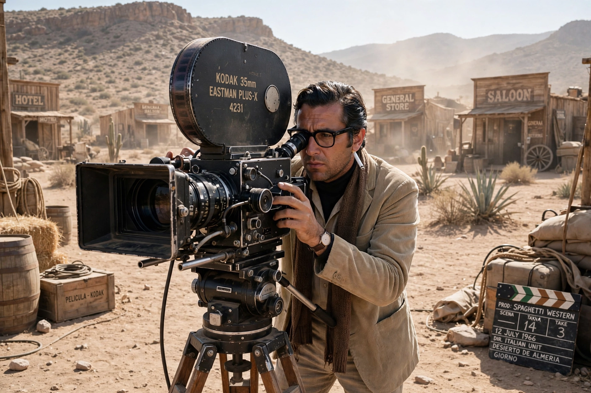

| Sergio Leone | |
|---|---|
 Leone on set in the 1960s | |
| Born | 3 January 1929, Rome, Italy |
| Died | 30 April 1989 (aged 60), Rome, Italy |
| Occupation | Film director, producer, screenwriter |
| Years active | 1948–1989 |
Sergio Leone (3 January 1929 – 30 April 1989) was an Italian film director, producer and screenwriter credited as the pioneer of the Spaghetti Western genre. He is widely regarded as one of the most influential directors in the history of cinema, best known for the Dollars Trilogy with Clint Eastwood and for the epic films Once Upon a Time in the West (1968) and Once Upon a Time in America (1984).
Leone grew up in Rome's Trastevere district, the son of director Roberto Roberti. He worked as an assistant on Hollywood productions shot at Cinecittà, including Quo Vadis and Ben-Hur. After directing peplum films such as The Colossus of Rhodes (1961), he made A Fistful of Dollars (1964) — shot in Spain with a tiny budget and starring the then little-known Clint Eastwood. Its stylised violence, extreme close-ups, and Ennio Morricone's scores transformed the Western.
For a Few Dollars More (1965) and The Good, the Bad and the Ugly (1966) completed the trilogy. Leone then made Once Upon a Time in the West with Henry Fonda and Charles Bronson, and finally the gangster epic Once Upon a Time in America (1984) with Robert De Niro.
Leone's trademarks — operatic pacing, long wordless duels, ironic undercutting of Western mythology, and Morricone's music written before filming — influenced directors from Quentin Tarantino to Robert Rodriguez and changed the visual grammar of action cinema.